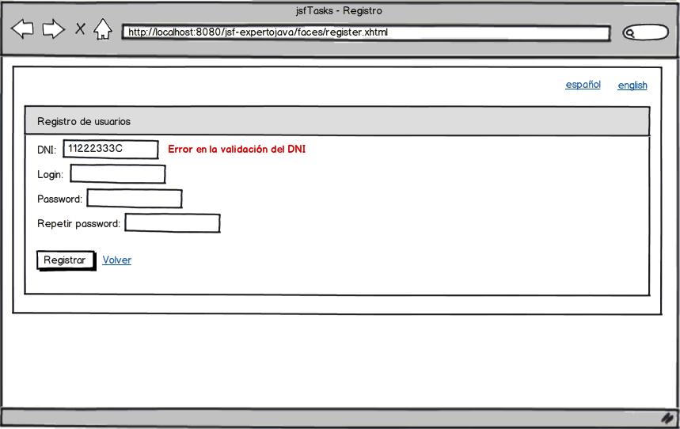
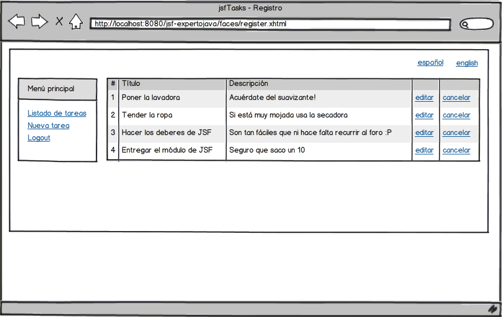
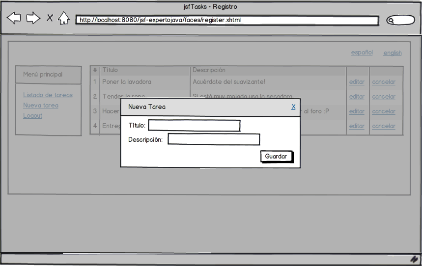
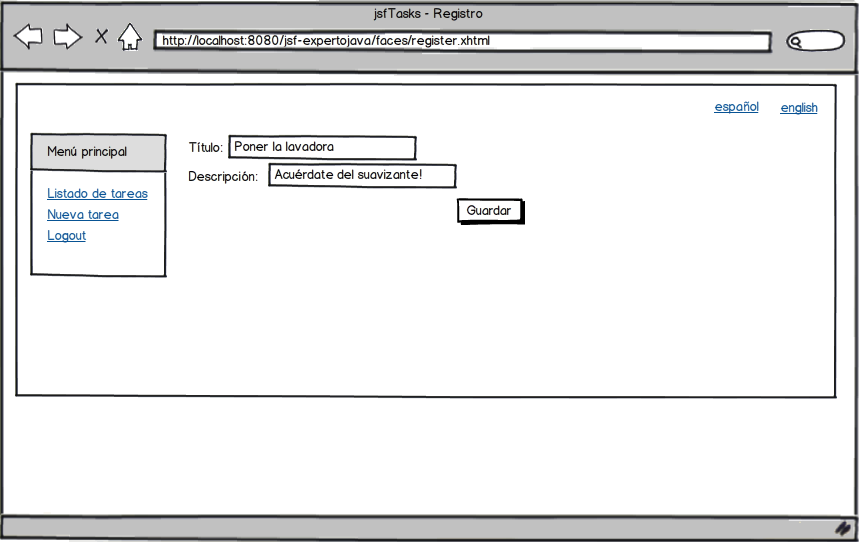

Ejercicios sesión 4 - Proyecto en RichFaces
El objetivo de esta sesión es introducir en nunuestro proyecyo JSF tradicionaluna serie de componentes de RichFaces. Además, introduciremos opciones para internacionalizar nuestra aplicación.
Internacionalización de la aplicación (1 punto)
El objetivo consiste en modificar nuestra plantilla inicial para dar la opción de mostrar la aplicación en dos idiomas: Español e Inglés. El idioma soportado por defecto será el Español:

Es posible que en algún momento necesites obtener alguna cadena desde el código Java. Para ello, puedes servirte de la siguiente clase:
package es.ua.jtech.jsf.i18n;
import java.text.MessageFormat;
import java.util.ResourceBundle;
import javax.faces.context.FacesContext;
public class Messages {
public static String getMessage(String id){
final FacesContext context = FacesContext.getCurrentInstance();
final ResourceBundle msgs = context.getApplication().getResourceBundle(context, "msgs");
return msgs.getString(id);
}
public static String getMessage(String id, Object...args){
final FacesContext context = FacesContext.getCurrentInstance();
final ResourceBundle msgs = context.getApplication().getResourceBundle(context, "msgs");
final MessageFormat mf = new MessageFormat(msgs.getString(id));
return mf.format(args);
}
}
Vemos que tenemos sobrecargado el método getMessage. Con la segunda opción, se nos permite el uso de placeholders en las cadenas. Un sitio donde es interesante usarlo es en la validación del login, para decir si éste se encuentra utilizado (en el properties: registerController_checkLogin_error=El alias {0} ya existe)
if("admin".equals(loginStr)){
Object[] args = {loginStr};
final String msg = Messages.getMessage("registerController_checkLogin_error", args);
FacesMessage message = new FacesMessage(FacesMessage.SEVERITY_ERROR, msg, msg);
FacesContext context = FacesContext.getCurrentInstance();
context.addMessage(loginInput.getClientId(context), message);
context.renderResponse();
}
CRUD de tareas (2 puntos)
En esta sesión vamos a realizar el CRUD de tareas.
Las pantallas a implementar serán las siguientes:
El listado de tareas tendrá la siguiente forma:

Usaremos un componente rich:dataTable para este listado. Esta tabla deberá tener un máximo de 10 entradas y estar paginada con un rich:dataScroller.
Para la creación de una nueva tarea, utilizaremos un componente rich:popUpPanel.

Para editar la tarea, lo haremos en una página aparte. Ya que el formulario es exactamente igual que el de creación, vamos a intentar reutilizarlo en lugar de hacer uno nuevo:

A la hora de hacer nuestra plantilla de facelets, vamos a crear una plantilla que utilice la base de la plantilla anterior, y que inserte una tabla con dos columnas: una con el menú a la izquierda (fijo y por eso estará en la plantilla), y el contenido a la derecha.
<?xml version='1.0' encoding='UTF-8' ?>
<!DOCTYPE html PUBLIC
"-//W3C//DTD XHTML 1.0 Transitional//EN"
"http://www.w3.org/TR/xhtml1/DTD/xhtml1-transitional.dtd">
<ui:composition template="/templates/template.xhtml"
xmlns="http://www.w3.org/1999/xhtml"
xmlns:ui="http://java.sun.com/jsf/facelets"
xmlns:f="http://java.sun.com/jsf/core">
<ui:define name="title">#{user.name}</ui:define>
<ui:define name="body">
<table border="0" cellspacing="0" cellpadding="0">
<tr>
<td valign="top">
<ui:insert name="leftContent">
<ui:include src="/menu.xhtml" />
</ui:insert>
</td>
<td width="10"></td>
<td valign="top">
<ui:insert name="mainContent">
main content
</ui:insert>
</td>
</tr>
</table>
</ui:define>
</ui:composition>
En resumidas cuentas, haremos una plantilla sobre otra plantilla
Para esta parte crearemos un controlador nuevo llamado TasksController. Por si os sirve de ayuda, el que se proporcionará en la solución tendrá el siguiente esqueleto:
package es.ua.jtech.jsf.controller;
import es.ua.jtech.jsf.model.TaskBean;
import es.ua.jtech.jsf.model.UserBean;
import java.io.Serializable;
import javax.faces.bean.ManagedBean;
import javax.faces.bean.ManagedProperty;
import javax.faces.bean.SessionScoped;
@ManagedBean
@SessionScoped
public class TasksController implements Serializable {
@ManagedProperty(value="#{user}")
UserBean user;
TaskBean task;
int page=1;
public String addTask(){
...
}
public TaskBean getTask() {
...
}
public void removeTask(){
...
}
//GETTERS Y SETTERS
}